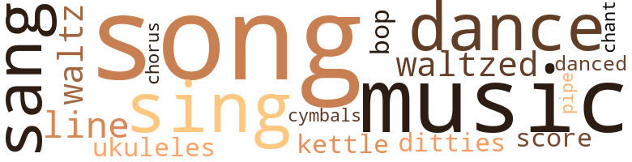
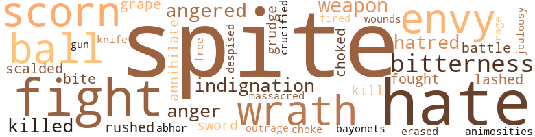
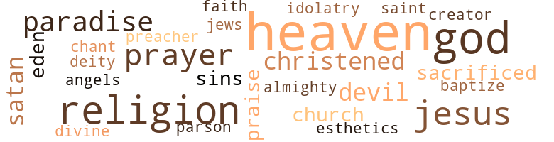

"Now I Am Civilized", by Huffman, Eugene H. (1930)
36 music-related terms matched in this text.
Most frequent terms in this topic: music (5); song (4); sing (3); sang (3); songs (2)
bop.v.01
Definition: dance the bebop
| word | sentence |
|---|---|
| bop | " RACE PROBLEM " I WAS just about ready to bop Mr. James B. Well-done in the mouth on account o all his senseless chatter when it suddenly occurred to me how little I knew of the world to which I racially belonged . |
chant.n.01
Definition: a repetitive song in which as many syllables as necessary are assigned to a single tone
| word | sentence |
|---|---|
| chant | In our utter despair we begun to weep , and chant sad songs of sorrow . |
chorus.n.01
Definition: any utterance produced simultaneously by a group
| word | sentence |
|---|---|
| chorus | Then all the people on his side took off their hats and bowed low , and in a mighty chorus they said : " By this token shall our land no longer be known as a integral part of The Great Real o Civilization , but as The United States of America , and the people shall be known as Americans ! |
cymbal.n.01
Definition: a percussion instrument consisting of a concave brass disk; makes a loud crashing sound when hit with a drumstick or when two are struck together
| word | sentence |
|---|---|
| cymbals | Because aside from fancyin that we would arrive at a port that would surpass Fairyland itself with its marvelous beauty we had imagined that we would be greeted by all the Big Chiefs of Civilization , clothed in their official raiment , accompanied by their handsome Lutenants and hundreds of fair dancin maidens makin a great joyful noise and sounding cymbals . |
dance.n.01
Definition: an artistic form of nonverbal communication
| word | sentence |
|---|---|
| dance | But when it finally ended for good and a sleek gentleman rushed up and engaged my fair partner for the next dance I retired to the back-ground where I could watch the crowd and see if I could n't get some more comedy in my life . |
| dances | THE HORRORS O STRAIGHTENED HAIR AFTER several more dances and all the gentlemen began to get warmed up I got a idea in my head that so much exercise was n't the very best thing in the world for a gentleman with straightened hair . |
| dance | And after that they did another very graceful dance called the " Black Bottom , " and that did settle it . |
dance.v.03
Definition: skip, leap, or move up and down or sideways
| word | sentence |
|---|---|
| danced | And that we lolled in the shade of the spreadin palms by day , and at night we danced in the moonlight , to the stirrin beat of a orchestra of tomtoms . |
ditty.n.01
Definition: a short simple song (or the words of a poem intended to be sung)
| word | sentence |
|---|---|
| ditties | Poets and Poetesses wrote beautiful sonnets to him ; fair debutantes rolled provocatin eyes and strummed naughty little ditties to him on their ukuleles . |
kettle.n.04
Definition: a large hemispherical brass or copper percussion instrument with a drumhead that can be tuned by adjusting the tension on it
| word | sentence |
|---|---|
| kettle | I cooked em to a finish , and while they was cookin - which takes quite a long while - I made up a big bucket o batter and then turned it all into little white hearts , which was done by usin a cute little heart-shaped " patty-iron , " which is operated on just about the same principal as a waffle-iron , only in this case the iron was first dipped into the " patty " and then the whole kaboodle was quickly plunged into a kettle o boil-in grease . |
music.n.01
Definition: an artistic form of auditory communication incorporating instrumental or vocal tones in a structured and continuous manner
| word | sentence |
|---|---|
| music | When I recovered from the shock o my loss enough to write , it was merely a letter o condolence , which I ended up by advisin her to try and go to Tuskegee and get a education , and to specialize in music . |
| music | When the music suddenly stopped everybody clapped their hands and that made us all have to waltz some more . |
| music | But when I reminded her o that fact she said that it was all the result of her personality and music . |
| music | So the party broke up with music , singin and dancin , and in due time a envyed few was herded onto the ships and our hosts set sail . |
| music | So when they began to travel back and fourth and saw that the people in the South was sittin around in pretty parlours readin poetry and listenin to soft strains o music , with hundreds o Duskyland slaves to do their work , while they and their unfortunate ilk earned their daily bread by the sweat o their own brows they waxed very jealous and their hearts was filled with much bitter envy . |
pipe.n.04
Definition: a tubular wind instrument
| word | sentence |
|---|---|
| pipe | Put that in your pipe and smoke it , " exclaimed a smart alec young Northerner . |
score.n.02
Definition: a written form of a musical composition; parts for different instruments appear on separate staves on large pages
| word | sentence |
|---|---|
| score | A score or more o Duskymerican gentlemen was surgin past , singin , dancin and shoutin , " ' Xtra - aa ! ' |
sing.v.02
Definition: produce tones with the voice
| word | sentence |
|---|---|
| sing | But that is a delicate subject , and we 'd better not sing that too loud . |
| sing | But that is a delicate subject , and we 'd better not sing that too loud . |
| sang | I sang . |
| sang | We sang unto the Lord new songs , and shouted His praise with much glory . |
| sang | My heart sang for joy ; I walked on air ! |
| sing | Never would I be persuaded to go to the icy North now , when I could go to a land of eternal sunshine , where the birds sing a endless song , where yellow oranges grow , and the golden poppies sweetly smile all the year ! |
song.n.01
Definition: a short musical composition with words
| word | sentence |
|---|---|
| song | I had a friend who , after readin Shakespeare , sat down and wrote a song called " Shake That Thing . " |
| song | Now just when I was rejoicin over my friend 's tremendous success as a song writer I received a letter direct from Sadie May that scattered my joy as a swift wind scatters dried rose leaves , and plunged me into a most bitter Gethsimane . |
| song | And the Prince said he liked it all right , but it was far from bein the song that all the people seem to think it is . |
| songs | In our utter despair we begun to weep , and chant sad songs of sorrow . |
| songs | We sang unto the Lord new songs , and shouted His praise with much glory . |
| song | Never would I be persuaded to go to the icy North now , when I could go to a land of eternal sunshine , where the birds sing a endless song , where yellow oranges grow , and the golden poppies sweetly smile all the year ! |
tune.n.01
Definition: a succession of notes forming a distinctive sequence
| word | sentence |
|---|---|
| line | Because just as soon as we let them out they made a bee line for their friends and it was just pathetic when they met . |
| line | So the short and long of it was that the Koonces hired Mr. Togo , a young Japaneze gentleman , to do all the work that was not in my line ; because by the time I come to the Koonces Id become famous as a good cook in the Angel city and was very much in demand , and could really be tempermental . |
uke.n.01
Definition: a small guitar having four strings
| word | sentence |
|---|---|
| ukuleles | Poets and Poetesses wrote beautiful sonnets to him ; fair debutantes rolled provocatin eyes and strummed naughty little ditties to him on their ukuleles . |
waltz.v.01
Definition: dance a waltz
| word | sentence |
|---|---|
| waltzed | About that time the enchantin strains o a waltz come from the bower , beneath which the ochestra sat , an my friend the Undertaker embraced Miss Day and waltzed away ; so there was nothin left for me to do but embrace Miss O'Connor and follow them . |
| waltzed | And as we waltzed , and she talked to me and looked up into my face with her large violet-blue eyes I got a faint idea just how come a " high yellow " always seems to fascinate a gentleman of sable hue . |
| waltz | So after findin that out I gained my composure and really began to show Miss O'Connor that I knew how to waltz . |
| waltz | When the music suddenly stopped everybody clapped their hands and that made us all have to waltz some more . |
83 violence-related terms matched in this text.
Most frequent terms in this topic: spite (16); hate (7); fight (5); envy (3); bitterness (3)
abhor.v.01
Definition: find repugnant
| word | sentence |
|---|---|
| abhor | " But , " he finally got a chance to say , " while I do n't want to appear as takin a hostile attitude toward the South and takin sides with the North , since this very unfortunate ocasion arises , I must publicly state that I have long since begun to abhor the tamin business and think that it has gone decidedly the limit . |
anger.n.01
Definition: a strong emotion; a feeling that is oriented toward some real or supposed grievance
| word | sentence |
|---|---|
| anger | I saw anger flash into her dark eyes , but she controlled it and resorted to the other method . |
| anger | It seems that when news o this demonstration reached The Crown 's ears that Royal One waxed very wroth and registered great anger on his throne . |
anger.v.02
Definition: become angry
| word | sentence |
|---|---|
| angered | " Well now thar 's a wood-chuck in the wood-pile somewhar ! " exclaimed Deacon Scott , angered by the disappointment . |
| angered | " Well now thar 's a wood-chuck in the wood-pile somewhar ! " exclaimed Deacon Scott , angered by the disappointment . |
animosity.n.01
Definition: a feeling of ill will arousing active hostility
| word | sentence |
|---|---|
| animosities | Naturally little animosities was bound to arise between the two divisions . |
battle.v.01
Definition: battle or contend against in or as if in a battle
| word | sentence |
|---|---|
| battle | Nevertheless I now had my trade , my weapon to battle my way , and that was that . |
bayonet.n.01
Definition: a knife that can be fixed to the end of a rifle and used as a weapon
| word | sentence |
|---|---|
| bayonets | But Aunty dear realizin that I was misunder-standin what she meant explained that it wasnt a battle of bullets and bayonets that results in instant destruction , but that it was the great battle o CIVILIZATION ; because she seemed to be convinsed that Civilization was a endless battle and the minit you ceased to fight all Civilization just simply stampeded right over you in a awful onslaugt and crushed you in the dust - or mud - as if you was a crawlin worm . |
blister.v.02
Definition: subject to harsh criticism
| word | sentence |
|---|---|
| scalded | And if the police had n't come to my rescue them chitlin-hungry people woulda turned my booth plumb over , which woulda been the tragic end o me , because I woulda been scalded to death with all o that hot grease I had on the stove , and that great caldron o hot chitterlings . |
brawl.n.02
Definition: a noisy fight in a crowd
| word | sentence |
|---|---|
| free-for-all | It was a free-for-all . |
contemn.v.01
Definition: look down on with disdain
| word | sentence |
|---|---|
| scorn | And then when all the progressive races look on them with contempt and scorn them for the puny miserable apes they are they get mad and call it a " Race Problem , " and then go around whinin and singin " The Blues " about their " unfortunate " lot . |
| scorn | I began to rave and curse the race o men to which I belonged for relegatin their women - their own sisters and mothers - to the junk heap , and then with a impish grin and a finger of scorn pointed to them and vociferously shouted : " Too black ! " |
| scorn | They laughed us almost to scorn . |
| despised | Now I must confess that in spite o all my Aunt 's precaution Im afraid that I had developed a slight case o that inferiority complex that she sorely despised , after all . |
crucify.v.01
Definition: kill by nailing onto a cross
| word | sentence |
|---|---|
| crucified | And Im tellin you , when they got through tellin us about how Jesus had once come down here on this wicked Earth and walked about , preachin the gospel , healin the sick and raisin the dead , and then after bein crucified , rode in triumph to Heaven on the clouds many of us got religion right then and there . |
eliminate.v.03
Definition: kill in large numbers
| word | sentence |
|---|---|
| annihilate | And this demonstration should give anti-royaltys and other radicals who would relegate all royalty to the junk heap quite a lot to think about before they completely annihilate all the Princes , Kings , and Queens o this mundane plane . |
envy.n.01
Definition: a feeling of grudging admiration and desire to have something that is possessed by another
| word | sentence |
|---|---|
| envy | And if his Imperial Highness , Nero , coulda been there on one o them nights he woulda turned green with envy . |
| envy | And then she began to stage a dramatic act that woulda made the immortal Sarah Burnheart and the great Ellynora Duse turn green with envy . |
| envy | So when they began to travel back and fourth and saw that the people in the South was sittin around in pretty parlours readin poetry and listenin to soft strains o music , with hundreds o Duskyland slaves to do their work , while they and their unfortunate ilk earned their daily bread by the sweat o their own brows they waxed very jealous and their hearts was filled with much bitter envy . |
erase.v.01
Definition: remove from memory or existence
| word | sentence |
|---|---|
| erased | Some o our women burst into tears and the smiles on our fine men 's faces was erased , because we began to suspect that we was fools to permit these fair charmers to lure us away from our beloved Dusky-land to follow them over in Civilization . |
fight.n.05
Definition: a boxing or wrestling match
| word | sentence |
|---|---|
| fight | Sorry because they had lost the fight , and regrettin that they had lost all their slaves . |
fight.v.02
Definition: fight against or resist strongly
| word | sentence |
|---|---|
| fight | A DOCTOR OF COOKING AS I APROACHED my teens , my Aunt , rich in wisdom in spite of her lack of nolledge , decided I had ought to learn a trade , because she said that in a few years I would be growin up and would have to have some kind of a definit weapon with which to fight my own battles . |
| fought | I looked at her in aw , because in my extreem youth and unsofistication I hadnt the slightest idea that all the time as I went about my childish play , secretly a battle was bein fought for me . |
| fight | But Aunty dear realizin that I was misunder-standin what she meant explained that it wasnt a battle of bullets and bayonets that results in instant destruction , but that it was the great battle o CIVILIZATION ; because she seemed to be convinsed that Civilization was a endless battle and the minit you ceased to fight all Civilization just simply stampeded right over you in a awful onslaugt and crushed you in the dust - or mud - as if you was a crawlin worm . |
| fight | I will see that the Union be firmly held together even if every one o us has to take off our coats and fight until we 're bloody as a bunch o fightin bulls ! " |
| fight | That is the battle I charge you to fight against , son , as you go out into the world . |
fury.n.01
Definition: a feeling of intense anger
| word | sentence |
|---|---|
| rage | Boilin with rage they returned to their ships and set sail for home , plottin and schemin all the way . |
gag.v.06
Definition: cause to retch or choke
| word | sentence |
|---|---|
| choked | Mrs. Sartoris choked back her tears , scrambled out o bed and sat before her mirror . |
| choke | And I sat down and wrote to her and sent her a role o tips big enough to choke a hippopotomus . |
grapeshot.n.01
Definition: a cluster of small projectiles fired together from a cannon to produce a hail of shot
| word | sentence |
|---|---|
| grape | To the right , just opposite the stick-and-dirt chimney , was the red and yellow plum , and peach orchards , and on the left was the grape arbor . |
grudge.n.01
Definition: a resentment strong enough to justify retaliation
| word | sentence |
|---|---|
| grudge | Of course them poor innocent brutes didnt know nothin about all the capers their owners ' Mammy had cut up , and so they bore no grudge against the Duskymerican world . |
gun.n.01
Definition: a weapon that discharges a missile at high velocity (especially from a metal tube or barrel)
| word | sentence |
|---|---|
| gun | So I told him how I had just alighted from my sleeper and was standin there admirin the river and all the pretty ships that was sailin up and down , etc. , etc. , when a White-American gentleman approached me with a look that did n't seem to be at all friendly which decided me to get myself hence ; and as I was obeyin my decision he fired his gun at me and that did settle it . |
hate.n.01
Definition: the emotion of intense dislike; a feeling of dislike so strong that it demands action
| word | sentence |
|---|---|
| hatred | And as they sat nursin their wounds and sheddin bitter tears their hearts was filled with bitter hatred against the Northerners , and still more bitter hatred against us . |
| hatred | And as they sat nursin their wounds and sheddin bitter tears their hearts was filled with bitter hatred against the Northerners , and still more bitter hatred against us . |
hate.v.01
Definition: dislike intensely; feel antipathy or aversion towards
| word | sentence |
|---|---|
| hate | WAY DOWN IN ALLAHBAMA ALTHOUGH I hate to even revery it in my Revery , Ufollow , my birth place , was really not much of a Town . |
| hate | And , although I hate to even revery it in My Reveriee , it seems that the dear Public are nothin more - or less - than a lot o poor dumbbells ; because they are so easily deceived . |
| hate | And , although I hate to even revery it in My Revery , the Breelands seemed to be sore at all the Duskymericans in this fare land , because it seems that once upon a time they had a Duskymerican lady cook who they said was their " Mammy . " |
| hate | Your love has grown cold , and you hate to write and tell me . |
| hate | But , seein that you have , although I hate to even think o such a thing , I must make this one point clear : That when the people o this United Kingdom felt and decided that they could get along better and happier without The Crown they all joined hands and seceded from that royal body ; and now , before we 'll let you Northerners come down here and run our business we will secede from you ! " |
| hate | And when a few days later I got a job cookin for Ma ' soo and Madame Henri Le Beaux Bon Hon , up in Carrolton and was about to go out into the world and start fightin my battle , Big Birdie 's and Little Birdie 's hearts was filled up , because they really did hate to see me go . |
| hate | To help me with my Civilizment the Koonces also gave me access to their library ; but , although I hate to even revery it in My Reveriee , I must confess that I derived very little benefit from readin the Koonces ' books , because they are all so very de trop . |
indignation.n.01
Definition: a feeling of righteous anger
| word | sentence |
|---|---|
| indignation | At such times there is considerable indignation on the part of the dear Public , over the shameful tactics of the villainous Deceivers . |
| outrage | Sightin our valuable gifts that we had brought for the King and Queen , our hospital greeters would a pounced on us and taken them away from us , but our fair hosts who had committeed this outrage upon us stopped them . |
| indignation | JEFF DAVIS VS. JOHN BROWN FATE moved restlessly , because by this time the indignation of the Northerners had reached fanatical proportions and trouble seemed very imminent . |
jealousy.n.01
Definition: a feeling of jealous envy (especially of a rival)
| word | sentence |
|---|---|
| jealousy | And as they peered from behind the trees and bushes and seen us lollin in the shade o the beautiful palms , caressin our sweethearts and drinkin coconut juice they waxed envious , and their hearts was filled with jealousy and malace . " |
kill.v.10
Definition: cause the death of, without intention
| word | sentence |
|---|---|
| kill | We built a " pen " for them to sleep in at night , but in the daytime we had to let them out so they could go for a walk and catch some air , because it is considered cruelty to animals to keep a hog shut up in a pen in the daytime , unless you are getting ready to kill him and eat him . |
| killed | Why , if they hadnt to stopped us I expect some of us woulda killed ourselves . |
| killed | And then if it had n't been for the quick action of a group o very strong men they woulda all stampeded and killed the poor President right then and there . |
knife.n.02
Definition: a weapon with a handle and blade with a sharp point
| word | sentence |
|---|---|
| knife | That white man stood up there and bawled so that I had to kinda smile myself in spite o the fact that I was almost ready to make hash-meat out o him with the butcher knife . |
malice.n.01
Definition: feeling a need to see others suffer
| word | sentence |
|---|---|
| spite | A DOCTOR OF COOKING AS I APROACHED my teens , my Aunt , rich in wisdom in spite of her lack of nolledge , decided I had ought to learn a trade , because she said that in a few years I would be growin up and would have to have some kind of a definit weapon with which to fight my own battles . |
| spite | She said that it was awfuly mean of Ole Moster to do that , because Slavery , in spite of the awful disgrace it was , lasted much longer than anybody had any idea it would , and by the time it was broken up most of us had forgotten what our ancestral names was because wed been goin in Ole Moster 's name for so long . |
| spite | And because their Mammy they used to have got so she just simply couldnt stand good treatment no longer , contracted the " big-head , " got a idea in her kinky head that she was white and acted the way she did generally , Pete and his mother was always tryin to take the spite out on us . |
| spite | " For shame to come way down here in this kitchen and try to take the spite out on me , because Ah 's cullud . " |
| spite | And I soon found out that Florentine was very popular in the cream o Society , in spite of her dangerous amount of pigmentation . |
| spite | Sadie May was dead ; I still had several thousand dollars to my credit , and I was enjoyin the graciousness o Society , in spite o all it had done to me . |
| spite | But in spite of the homelikeness of the hotel I decided that as a student and a scholar I had ought to see Paris . |
| spite | " Well , " I said , beginnin to lose my composure a little in spite of myself , " You-all have as much right to build a new fence as we have ! " |
| spite | She told me that she thought I was very handsome , in spite of the fact that I was rather slight of statue . |
| spite | I realized then as never before how rich my Aunt was in wisdom in spite of her lack o nol-ledge . |
| spite | That white man stood up there and bawled so that I had to kinda smile myself in spite o the fact that I was almost ready to make hash-meat out o him with the butcher knife . |
| spite | I have said that , out o pure selfishness our masters took our dignified Duskyland names away from us and named us after themselves ; so , for spite , this lively generation disregarded their names and called them " Ole Moster . " |
| spite | So instead o takin the spite out on the Yankees - who started it first - they began to persecute us in a way that human beins have seldom , if ever , been persecuted before . |
| spite | Now I must confess that in spite o all my Aunt 's precaution Im afraid that I had developed a slight case o that inferiority complex that she sorely despised , after all . |
| spite | And in spite o the fact that this gentleman had evidently been cited for some special bravery I didnt like the look in his eye . |
| spite | Because in spite of the fact that I made many biscuits and pies and cakes and things that no live creature could eat and still live Aunty said that I was no block-head pupil . |
massacre.v.01
Definition: kill a large number of people indiscriminately
| word | sentence |
|---|---|
| massacred | Because whereas we had been victims o many inhuman cruelties in Slavery we wasnt tarred , feathered , lynched , burned , and massacred by the wholesale as wre was now . " |
musket_ball.n.01
Definition: a solid projectile that is shot by a musket
| word | sentence |
|---|---|
| ball | I then placed a little ball o very red pimiento in the center of em , which would make everybody admire em , because they was very pretty . |
| balls | So I was lettin him help himself to everything present when he suddenly noticed the pretty little white hearts with the little red balls in the middle that was exhibited on a big platter , and he wanted to know what were they . |
| balls | And after presentin the entirely too good-lookin King and the ravishinly beautiful Queen with our gifts of francinsence , alows and myrh , and the great hunks o gold , tusks o ivory and balls o diamond that we had brought with us for that purpose we would be graciously enjoyin exzilaratin perfumed baths , and would be clothed in line raiment , after the fashion of the Civilized . |
open_fire.v.01
Definition: start firing a weapon
| word | sentence |
|---|---|
| fired | So I told him how I had just alighted from my sleeper and was standin there admirin the river and all the pretty ships that was sailin up and down , etc. , etc. , when a White-American gentleman approached me with a look that did n't seem to be at all friendly which decided me to get myself hence ; and as I was obeyin my decision he fired his gun at me and that did settle it . |
resentment.n.01
Definition: a feeling of deep and bitter anger and ill-will
| word | sentence |
|---|---|
| bitterness | So instead o returnin to their homes feelin very happy over the bounteous rewards the tamin business had brought their fellow-countrymen , they returned with a feelin of bitterness and sat for days broodin over the situation and discussin it with their friends . |
| bitterness | It fills me with a bitterness that galls my very soul . |
| bitterness | " Caint read , " he said with sudden bitterness that touched my heart . |
rush.v.02
Definition: attack suddenly
| word | sentence |
|---|---|
| rushed | But I had long since found out that it never pays to try to rush things in Civilization , because Civilized things always seem to refuse to be rushed . |
sting.n.03
Definition: a painful wound caused by the thrust of an insect's stinger into skin
| word | sentence |
|---|---|
| bite | Just wait till that Prince comes along ; if I can just wheedle a bite or two of some of this truck off on him , that will settle it . |
sword.n.01
Definition: a cutting or thrusting weapon that has a long metal blade and a hilt with a hand guard
| word | sentence |
|---|---|
| sword | Now that word " nigger , " comin from a white mouth , always did seem to cut me like the blade of a two-egded sword , and when all the other cruel words she used was throne in for good measure , well , I had to admit to myself that Mrs. Corrine Breeland had really got me told . |
weapon.n.01
Definition: any instrument or instrumentality used in fighting or hunting
| word | sentence |
|---|---|
| weapon | A DOCTOR OF COOKING AS I APROACHED my teens , my Aunt , rich in wisdom in spite of her lack of nolledge , decided I had ought to learn a trade , because she said that in a few years I would be growin up and would have to have some kind of a definit weapon with which to fight my own battles . |
| weapon | Nevertheless I now had my trade , my weapon to battle my way , and that was that . |
whip.v.04
Definition: strike as if by whipping
| word | sentence |
|---|---|
| lashed | Because that pig party turned out to be the third and last dramatic gesture in my life that lashed me on up the ladder o ambition that reaches to the top o that coveted hill on whose summit awaits Success and Fame . |
wound.n.01
Definition: an injury to living tissue (especially an injury involving a cut or break in the skin)
| word | sentence |
|---|---|
| wounds | And as they sat nursin their wounds and sheddin bitter tears their hearts was filled with bitter hatred against the Northerners , and still more bitter hatred against us . |
wrath.n.01
Definition: intense anger (usually on an epic scale)
| word | sentence |
|---|---|
| wrath | Because when the mighty Deacon Scott and the vociferous Reverend Bellows aroused from their slumbers and beheld the awful miracles that had been wrought , in the silence of the night , they was very much wrought up , and terrible was their wrath . |
| wrath | The Deacon shook his wife , Katie , with all the force of his supernatural power , and the Reverend invoked all the wrath of Heaven to come down and light upon his daughter , Emma , as they righteously demanded what evil had they done , that the Lord had visited these livin reminders upon them , as a reproach to their virtues , and a stigma on their Christian names . |
| wrath | We sent up a wail to high Heaven and invoked the wrath of all the Gods o Duskyland to come down and light upon these inhuman fiends . |
83 religion-related terms matched in this text.
Most frequent terms in this topic: Heaven (16); God (9); religion (8); Jesus (6); prayer (5)
aesthetic.n.01
Definition: (philosophy) a philosophical theory as to what is beautiful
| word | sentence |
|---|---|
| esthetics | I had artistic instincts enough in me to know that any bunch o deluded souls who went around advocatin that a gentleman of color looked better with his hair all starched and ironed like the angry bristles of a porcapine , and then pressed , pasted and glued down to his skull until he looked like a kitty cat after the mama cat had just got through lickin him than he did the way the good Lord made him certainly needed quite a few lessons in the appreciation of esthetics . |
baptize.v.01
Definition: administer baptism to
| word | sentence |
|---|---|
| baptize | So , credulously I hied myself to the library , to baptize my soul in the stirrin eloquence o the world 's most immortal Master . |
| christened | The only thing Im going to say about my birth , is that I was christened John Johnnie Johnson ; and I bore that undignified apelation until that never-to-be-forgotten day when I was first introduced to Fate 's awful dramatic gestures . |
| christened | At this point she got a bowl o water and prayed a prayer over it , and as I knelt before tier she sprinkled some of it on my head which christened me all over again and restored upon me the ancestral name of my forefathers : Ras-Taferi Hounin-Kounin , which , translated into American means , " who the hell 's business is it ? " which is a good question in America , because , as a race , we are entirely too inquistive into other people 's business . |
| christened | And after huggin and kissin me with all her might and sprinklin my face with a lot o tears it was then that she got up and got the bowl o water and christened me all over again , restorin upon me my ancestral name ; because she said if I went by that name , when I wrote to her nobody would ever think that it was me . |
chant.n.01
Definition: a repetitive song in which as many syllables as necessary are assigned to a single tone
| word | sentence |
|---|---|
| chant | In our utter despair we begun to weep , and chant sad songs of sorrow . |
church.n.02
Definition: a place for public (especially Christian) worship
| word | sentence |
|---|---|
| church | " Well , " said the pillows of the church , " if there had n't been so many miraculous conceptions here in Ufollow , durin the past six months we would be happy to believe what you all say . |
| church | And it just made me mad as a Game rooster when a Plymouth Rock gets into the yard , of a Sunday to peep through the window o my kitchen and see all Civilization and its sweethearts strollin off to church , some beautiful park , or out in the meadows to pick pretty wild flowers while I stayed in and cooked my employers ' dinner . |
curate.n.01
Definition: a person authorized to conduct religious worship
| word | sentence |
|---|---|
| parson | We heard your honourable parson 's daughter cast insinuations and reflections upon the fair name of our superior race . |
deity.n.01
Definition: any supernatural being worshipped as controlling some part of the world or some aspect of life or who is the personification of a force
| word | sentence |
|---|---|
| Deity | And the poor fellow fell on his knees and salaamed to the Deity in a way that made me look at him in aw . |
eden.n.01
Definition: any place of complete bliss and delight and peace
| word | sentence |
|---|---|
| Heaven | Meanwhile I would be doin all I could to become a " self-madew man , and then when we did get together , our combined , aw-inspirin nolledge would exalt the union and make it a thing that my Aunt could look down from Heaven and be proud of . |
| Heaven | The Deacon shook his wife , Katie , with all the force of his supernatural power , and the Reverend invoked all the wrath of Heaven to come down and light upon his daughter , Emma , as they righteously demanded what evil had they done , that the Lord had visited these livin reminders upon them , as a reproach to their virtues , and a stigma on their Christian names . |
| Eden | She said that we lived on the lushous fruit o the many trees , just as Adam and Eve did in the Garden of Eden , and we ate the creepin things that was found good for meat . |
| Paradise | It was Paradise . |
| Paradise | But , like that other Paradise , Satan finally entered , clothed in fairness , to precipitate chaos by beguilin a innocent people . |
| Eden | But she said that Satan did not enter Africa , which we will call " Duskyland , " in the guise of a Serpent , as he had entered Eden , because we was already entirely too familiar with them crawlin , venomous creatures to be deceived . |
| Heaven | It is like Heaven here . |
| Paradise | Surely this is Paradise ! |
| Heaven | We sent up a wail to high Heaven and invoked the wrath of all the Gods o Duskyland to come down and light upon these inhuman fiends . |
| Heaven | They told us about Heaven , its sea of glass , its gates of pearl and streets of gold . |
| Heaven | But they said that Heaven was way up in the skies and that the only way anybody could ever get up there was to pray and get religion . |
| Heaven | And if we had to be tamed before we could become a respectable part o The Great Realm O Civilization we probably would be confronted with the same problem when we got up in Heaven . |
| Heaven | We dared say we 'd be disappointed after we got to Heaven anyhow . |
| Heaven | Because they had told us that their Great Realm O Civilization was just as shinin a place as this Heaven they was ravin about . |
| Heaven | At any rate Heaven certainly couldnt be any more disappointin than The Great Realm O Civilization . |
| Heaven | Certainly if we was too wild to be Civilized and then live happy among these callus people down here , it would be the height o audacity for us to go up to Heaven and try to impose ourselves on poor Jesus . |
| Heaven | Besides it suddenly occurred to us that this goin to Heaven proposition was wrapped up in entirely too much mystery to suit our fancy anyhow . |
| Heaven | And if we did get it how would we ever get to Heaven if it was way up in the skyes ? |
| Heaven | And o course you know , you go to Heaven when Death calls you , - we mean when you " die . " |
| Heaven | And Im tellin you , when they got through tellin us about how Jesus had once come down here on this wicked Earth and walked about , preachin the gospel , healin the sick and raisin the dead , and then after bein crucified , rode in triumph to Heaven on the clouds many of us got religion right then and there . |
| Heaven | We was no longer mindful of things mundane , because we was layin up our treasures in Heaven . |
| Paradise | And in answer to my puzzled frown she fold me the pretty story of America 's Paradise . |
god.n.03
Definition: a man of such superior qualities that he seems like a deity to other people
| word | sentence |
|---|---|
| God | " In the name o God , answer ! " they thundered . |
| God | So it is up to us fathers and mothers - and husbands - to take our dusky damsels to task and force them to tell us the wherefores and howcome we have been made to suffer this terrible plaig , that we might put away evil from among us , and live holy in the sight o God . |
| God | Because I had to sit there and writhe , sigh , moan and groan , as that mixture o concentrated lye and God - knows-what-all ate at my very brains . |
| God | Because after doing a lot o Pauline Frederic , with her arms still holdin me in a vice-like embrace my Aunt sank to her knees , forcin me to mine , and in a tearful voice she thanked God that I had escaped the awfully horrible death that had come so nearly over-takin me . |
| Gods | But always remember , that ' though the mills o the Gods grind slow , they grind exceedin fine . ' |
| Gods | We sent up a wail to high Heaven and invoked the wrath of all the Gods o Duskyland to come down and light upon these inhuman fiends . |
| God | They told us about Jesus , the Holy Ghost and all the Angels , and then they told us about God , the Omnipresent Father of it all . |
| God | Would to God we 'd never even heard its enticin name . |
| God | " Cause we 's gwine to put on our shoes an shout all over God 's Heb ' n - ! " |
| God | Humanity has made a long stride forward up the Hill o Progress , and done a righteous thing in the sight o God . |
| God | But thank God I have been able to keep you free so far . |
godhead.n.01
Definition: terms referring to the Judeo-Christian God
| word | sentence |
|---|---|
| Almighty | So much so that the Almighty had visited the iniquities of the fathers upon the children , and bared what looked very much like disgrace at the doors of our upright homes . |
| divine | " STYLE " MY AUNT said that in Duskyland the human form divine was considered a ornament , a thing of beauty , simitry and grace ; and the more beautiful a person 's body was , the more pride they took in displaying it . |
| Creator | The next moment we was placed on the auction block , beneath the blue canopy o Heaven , in the sight of the Creator , and before the cold , calculatin eyes o them heartless men . |
idolatry.n.02
Definition: the worship of idols; the worship of images that are not God
| word | sentence |
|---|---|
| idolatry | Instead o them devotin their time , energy , thought and mazuka to things productive and progressive they are spendin all these invaluable attributes in idolatry , bleachin their skin and permittin the hair straighteners to cook out all their brains . |
jesus.n.01
Definition: a teacher and prophet born in Bethlehem and active in Nazareth; his life and sermons form the basis for Christianity (circa 4 BC - AD 29)
| word | sentence |
|---|---|
| Jesus | They told us of Jesus 's boundless love , and His ever willingness to prepare a mansion for all the poor down-trodden souls who couldnt afford one down here in this unfriendly world . |
| Jesus | That we would find gettin religion a easy enough task if we prayed hard enough and would have faith in Jesus and our prayer . |
| Jesus | And if this Jesus our masters was tellin us about was such a friend o the down-trodden , well then He certainly ought to harken unto us poor hopelessly wild creatures who was bein ruthlessly tamed to death . |
| Jesus | And Im tellin you , when they got through tellin us about how Jesus had once come down here on this wicked Earth and walked about , preachin the gospel , healin the sick and raisin the dead , and then after bein crucified , rode in triumph to Heaven on the clouds many of us got religion right then and there . |
| Jesus | Jesus had washed away our sins , and would come for us at last . |
| Jesus | It was ever thus , - from Noah to Jesus , and from Jesus to Columbus ; so our Ole Mosters could not possibly be an exception . |
jew.n.01
Definition: a person belonging to the worldwide group claiming descent from Jacob (or converted to it) and connected by cultural or religious ties
| word | sentence |
|---|---|
| Jews | Way back in ancient times they were the Romans and the Jews . |
praise.n.02
Definition: offering words of homage as an act of worship
| word | sentence |
|---|---|
| praise | We sang unto the Lord new songs , and shouted His praise with much glory . |
| praise | The party broke up with touch in shouts of " Glory halleluyah , " and much praise to His Holy Name ! |
prayer.n.01
Definition: the act of communicating with a deity (especially as a petition or in adoration or contrition or thanksgiving)
| word | sentence |
|---|---|
| prayer | And after callin the house to a impressive silent prayer the Reverend launched into the business of the hour . |
| prayer | At this point she got a bowl o water and prayed a prayer over it , and as I knelt before tier she sprinkled some of it on my head which christened me all over again and restored upon me the ancestral name of my forefathers : Ras-Taferi Hounin-Kounin , which , translated into American means , " who the hell 's business is it ? " which is a good question in America , because , as a race , we are entirely too inquistive into other people 's business . |
| prayer | That we would find gettin religion a easy enough task if we prayed hard enough and would have faith in Jesus and our prayer . |
| prayer | It was almost a prayer . |
| prayer | When the prayer was ended the noble President grabbed a big sheet o paper and swiftly wrote somethin down on it . |
preacher.n.01
Definition: someone whose occupation is preaching the gospel
| word | sentence |
|---|---|
| Preacher | I thought the dear guests had got a idea in their heads that I was somethin like a Preacher and that my salary had to be paid in collections . |
religion.n.01
Definition: a strong belief in a supernatural power or powers that control human destiny
| word | sentence |
|---|---|
| religion | And the opyate was religion ! |
| religion | But they said that Heaven was way up in the skies and that the only way anybody could ever get up there was to pray and get religion . |
| religion | That we would find gettin religion a easy enough task if we prayed hard enough and would have faith in Jesus and our prayer . |
| faith | That we would find gettin religion a easy enough task if we prayed hard enough and would have faith in Jesus and our prayer . |
| religion | Pray hard and get religion . |
| religion | And Im tellin you , when they got through tellin us about how Jesus had once come down here on this wicked Earth and walked about , preachin the gospel , healin the sick and raisin the dead , and then after bein crucified , rode in triumph to Heaven on the clouds many of us got religion right then and there . |
| religion | Because all the more hardened sinners among us was too busy ' going down in the valley ' seekin Jesus , and prayin for ' religion . ' |
| religion | The result was that when our young generation , born in The Great Realm O Civilization began to come on they were rather slow about gettin religion . |
| religion | And instead o us lendin em our every thought and aid , all the older ones had their minds on was goin down in the valley seekin Jesus , gettin religion and makin general preparations to board the gospel train and leave here , while the younger ones eternally plaiged em to death . |
sacrifice.v.04
Definition: make a sacrifice of; in religious rituals
| word | sentence |
|---|---|
| sacrificed | When I sacrificed mine and Sadie May 's ardent love on Civilization 's relentless altar . |
| sacrificed | And yet , even that had to be sacrificed on the relentless altar of Civilization ! |
saint.n.02
Definition: person of exceptional holiness
| word | sentence |
|---|---|
| Saint | And Mr. Koonce , havin done so much for me , if he had told me that the morrow would be Judgement , that night I woulda packed my valises and prepared to go out on said morrow and meet Saint Peter . |
| Angels | They told us about Jesus , the Holy Ghost and all the Angels , and then they told us about God , the Omnipresent Father of it all . |
satan.n.01
Definition: (Judeo-Christian and Islamic religions) chief spirit of evil and adversary of God; tempter of mankind; master of Hell
| word | sentence |
|---|---|
| devil | Instead , Sammy donned his over-alls and shirt ; and the Reverend clothed himself in his clergyman 's attire , and they marched up and down the streets and lanes o Dark-town , vociferously declarin that sin was on the rampage , that the devil had been turned loose , and evil was a-foul in the land . |
| devil | The very next day our hogs honored Pete and his mother 's hogs with their presence , and the next day the Breeland hogs returned the compilment ; and so it went from day to day , plaig on em , simply raizin the devil . |
| Satan | You sassy , impotent little black imp o Satan , you ! " |
| Satan | But , like that other Paradise , Satan finally entered , clothed in fairness , to precipitate chaos by beguilin a innocent people . |
| Satan | But she said that Satan did not enter Africa , which we will call " Duskyland , " in the guise of a Serpent , as he had entered Eden , because we was already entirely too familiar with them crawlin , venomous creatures to be deceived . |
| devil | And until they did they were the very devil on wheels . |
sin.n.06
Definition: violent and excited activity
| word | sentence |
|---|---|
| sins | So the Poet exclaimed : " Style O Style ; what sins are committed in your deceptive name ! " |
| sins | Jesus had washed away our sins , and would come for us at last . |